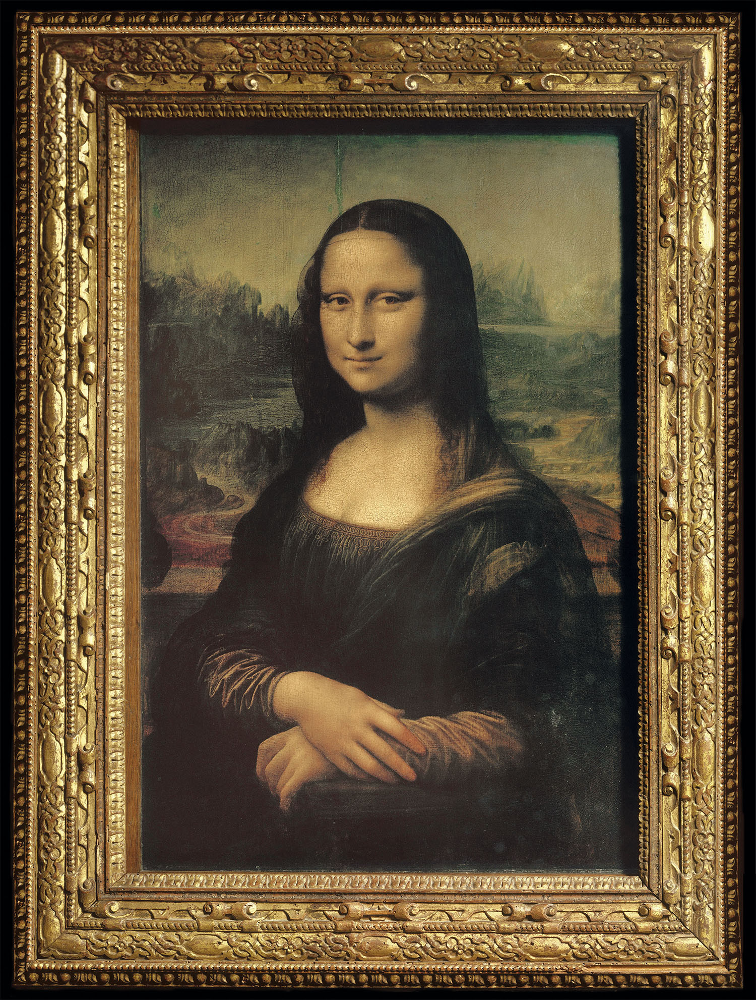
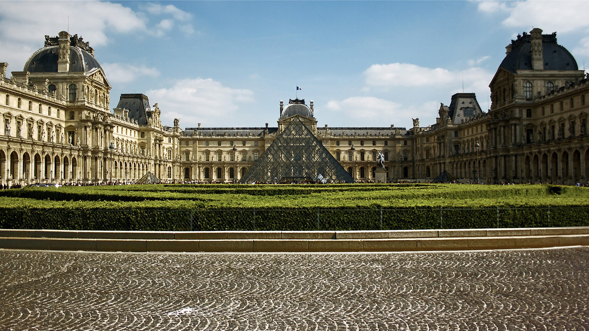
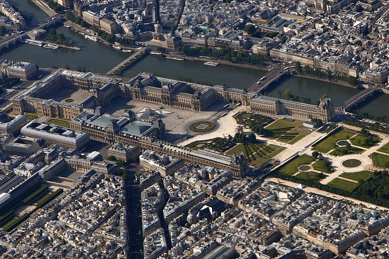
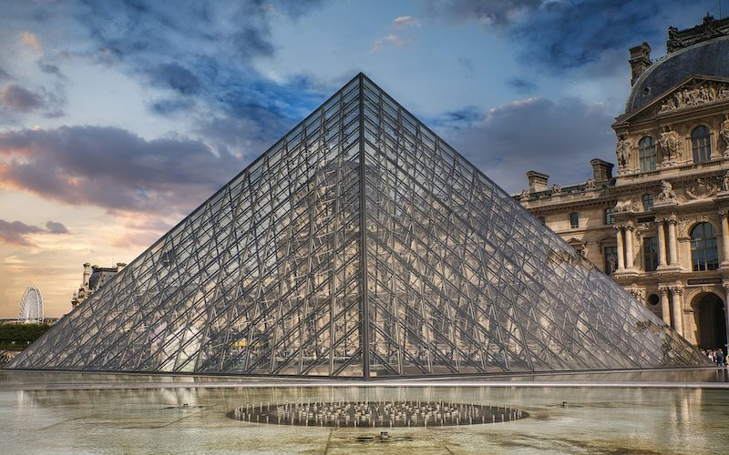
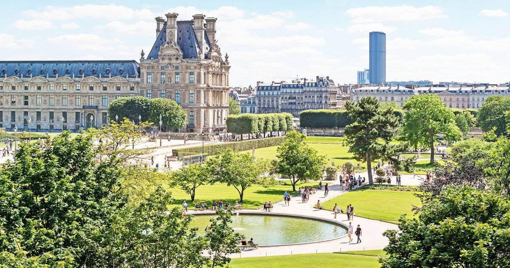

El museo del louvre

El Museo del Louvre es uno de los museos más grandes y famosos del mundo, ubicado en el centro de París, Francia. El museo cuenta con una extensa colección de arte que abarca desde la antigüedad hasta el siglo XIX. La colección incluye obras de maestros como Leonardo da Vinci, Rembrandt, Vermeer, Michelangelo y Rafael, entre otros.
El arte en el Louvre
La obra más famosa del Louvre es La Mona Lisa, pintada por Leonardo da Vinci, que atrae a millones de visitantes cada año. Otras obras notables incluyen La Libertad Guiando al Pueblo de Eugène Delacroix, La Venus de Milo, la Victoria de Samotracia y el Código de Hammurabi.

Además de estas obras, el museo cuenta con una gran cantidad de pinturas, esculturas y objetos de arte de diversas épocas y culturas. Es imposible ver todo el museo en un solo día, pero cada pieza es única y vale la pena explorarla en detalle.
Su arquitectura
El exterior del Museo del Louvre es tan impresionante como su interior. El edificio principal del museo es una obra maestra arquitectónica en sí misma, con una mezcla de estilos clásicos y modernos.
La fachada principal del Louvre está compuesta por una serie de alas que se extienden desde el edificio principal en forma de "U". Las dos alas laterales están conectadas por una estructura de cristal y metal llamada la Pirámide del Louvre, que se ha convertido en un icono moderno de París.

La pirámide fue diseñada por el arquitecto I. M. Pei y se inauguró en 1989. Tiene 21,6 metros de altura y está compuesta por 603 diamantes de cristal y 70 toneladas de acero. Es una entrada impresionante al museo y también sirve como punto de referencia en la ciudad.
Además de la pirámide, el exterior del Louvre también cuenta con hermosos jardines y patios interiores, como el Patio de Napoleón y el Jardín de las Tullerías. Estos espacios verdes ofrecen un respiro tranquilo del bullicio de la ciudad y son un lugar popular para relajarse y disfrutar del paisaje.
